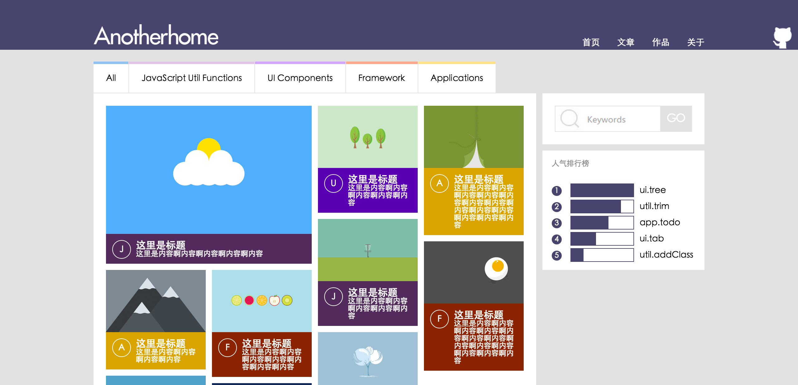
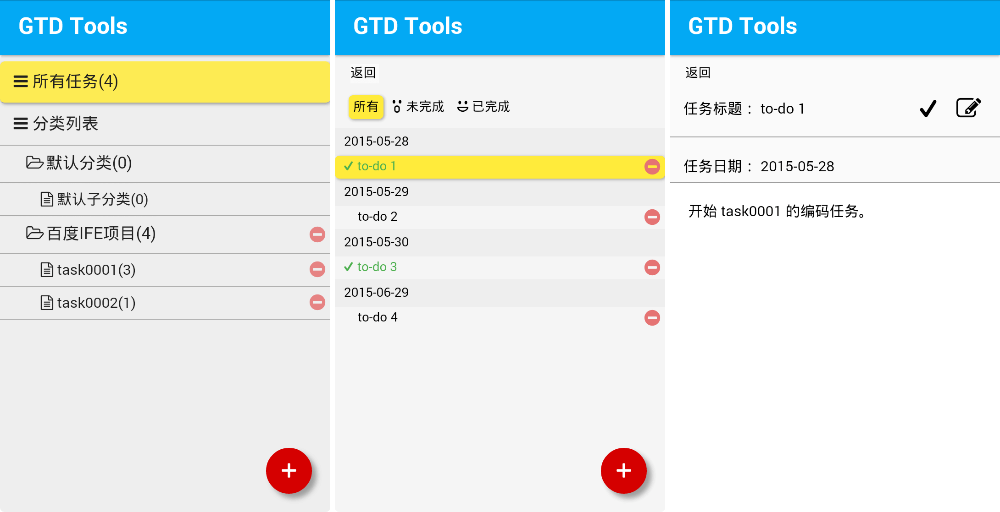
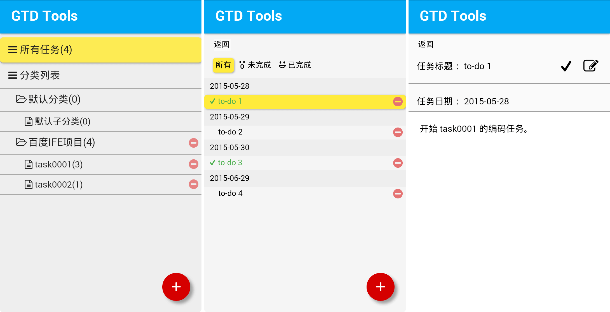

-
- Basic info. 基本信息
- 个人信息: 李由之 / 男 / 24岁
- 毕业院校: 太原理工大学
- 学 历: 本科
- 英语水平: CET-4
- 职 称: 软件设计师
- Blog: http://blog.csdn.net/m0_37529303
- GitHub: www.github.com/liyouzhi666
-
- Experience. 项目与工作经验
东软集团（大连）（2016.3 - 2017.3）
-
华为装备测试云
我参与“华为装备测试云”从项目立项到项目结束整个开发过程，“华为装备测试云”的客户为华为（深圳）“2012实验室-装备与测试部”，软件的主要功能为装备测试自动化， 测试服务一键部署，后端集群化云管理，服务微服务化使用docker容器管理，前端使用先进的angular2框架，使测试云较之前系统数据处理更快，数据管理更方便， 操作人员操作更简单，页面描画更流畅，由之前C-S模式变为B-S模式实现跨平台操作。
我在项目中作为项目组前端负责人，主要负责Web端开发和部署，根据客户原始需求，分析需求并设计Web端页面架构，带领团队成员完成项目前端的编码工作。我熟悉angular2的 特性和搭建方式，熟练使用javascript和typescript编码，还能熟练编写dockerfile，将前端代码打包为docker容器，熟悉nginx的代理和反向代理的配置方式，在17年 2月底到3月初出与团队主要成员去深圳参与项目交付，成功完成在华为厂区实地部署“装备测试云”的工作。
-
r_car(混合app)
基于ionic2框架，使用typescript语言和h5、css3进行开发。这是一款针对针对汽车车友的app，兼顾汽车维护点定位、车友定位、论坛评论分享交流经验的 APP，是一款实验性居多的产品，为验证ionic2开发难度、混合App性能等所做。
使用 ionic2 框架, 实验式的使用多大部分ionic特有的标签，并在app中结合百度地图，实现定位功能，成功在androids手机上运行，但是至今并未上线运营

个人项目
-
APlayer（2015.11） 源代码 Demo
炒鸡好看的 HTML5 音乐播放器，GitHub 热门榜（GitHub Trending repositories）前八，npm 下载量 4k+， GitHub 上 Star 615 Fork 103

-
Anotherhome个人博客（2014.2 - 至今） 源代码 Demo
Wordpress主题修改，内容维护，现日均浏览量 1000+

-
百度IFE前端技术学院课程（2015.4 - 2015.6） 源代码
学习百度IFE前端技术学院春季班课程，并独立完成其中的任务
-
Task 0001 源代码 Demo
实现了一个个人博客网站的首页、文章、作品、关于等静态页面，合理运用HTML语义化标签，并实现了多栏布局、瀑布流布局、时间轴等布局样式。
 -
Task 0002 源代码 Demo
实现了一个微型JS库，其中包括对原生 JavaScript 数据类型及语言基础、DOM、事件、BOM、Ajax等的操作和封装，并运用这个JS库实现了表单输入交互、 倒计时工具、轮播图、输入提示框、界面拖拽交互

-
Task 0003 0004 源代码 Demo
实现了一个 GTD Tools (个人任务管理系统)，支持任务两级分类、增删查改、标记、根据日期分类等功能，并实现了一个独立的移动版本
使用 localStorage 来保存用户的任务数据，处理了可能出现的 XSS 安全隐患，使用 原生JavaScript Less预处理器 来实现前端组件及数据交互， 使用 Yeoman Grunt 改进工作流
 

-
-
HTML.LOVE 个人简历（2015.8 - 至今） 源代码 Demo
设计优雅、内容完善的静态简历页面，可以用浏览器直接生成合适尺寸的PDF，使用 Gulp 改进工作流，GitHub 上 Star 133 Fork 33

-
jCarrousel（2015.8） 源代码 Demo
一个3D轮播图 jQuery 插件，实现了3D轮播效果，可以自适应宽度、自适应图片数量，有方便的切换按钮，另外实现了播放、停止、切换到任意一张图片的API

-
Do-you-like-me（2015.9） 源代码 Demo
一个简单有趣的 UI 点赞组件，后端使用 NodeJS + MongoDB 实现，用 mongoose 操作 MongoDB，实现了对 MongoDB 数据库简单的增删查改

-
EasyGoAgent 源代码
开箱即用 & 在线更新的GoAgent，GitHub 上 Star 209 Fork 70
-
Show Me the Code Python version 源代码
一系列Python小程序，包括 图像处理 数据库 文件操作 正则式 等内容
-
Simple-C Compiler 源代码
一个用C编写的简单类C语言编译器，目前完成了 词法分析 语法分析 阶段，使用了 Lex Yacc 两个工具
-
WHUTNews 源代码
Python 编写的爬取教务处公告，判断是否有新通知，并把新通知发邮件提醒的简单 Python 爬虫程序
-
- Skill. 技能清单
Web前端
-
HTML / CSS
能够编写语义化的 HTML，模块化的 CSS，完成较复杂的布局
熟悉 Less / Sass / Autoprefixer 等CSS预处理和后处理方法、工具
-
JavaScript
熟悉原生Javascript，能脱离jQuery等类库编码
能运用模块化、面向对象的方式编程
了解 RequireJS jQuery AngularJS 的使用
-
其他
熟悉 Yeoman Bower Grunt Gulp 前端自动化工具
了解前端安全、性能优化方面的一些知识
后端
-
环境
熟悉 Linux 开发环境、 Linux 服务器环境搭建部署，两年 Linux 日常使用经验
了解 Apache Nginx web服务器，一年多建站经验
-
语言
了解 Python，能够实现简单的爬虫、数据及图像处理工具、自动化脚本
了解 C，读过《C Primer Plus》，能编写简单的解释器
了解 Java，能进行简单的网络编程和多线程编程
其他
-
是一个有趣的人，博客日均浏览量 1000+，GitHub Followers 550+，微博粉丝 780+，微信公众号关注用户 460+
严重强迫症，不能忍受界面一个像素的偏差，同样不能忍受代码格式一个空格的偏差
学习能力强，以上绝大多数的技能都是大三转专业之后自学修得的
掌握 Vim Git 等开发工具的使用
能够熟练使用 Markdown 进行写作

李由之的简历
"Write the Code. Change the World."
-
- Contact. 联系方式
- 邮箱: li_you_zhi@163.com
- 微信: 李由之
- QQ: 845456707
-
- Application. 应聘岗位
- 前端工程师
-
- Tech. 技能点
Angular2HTML5CSS3C++NodeJSC
我是一个充满活力、对编程由衷热爱、善于发现问题的软件工程师。
我目前正在寻找前端工程师岗位，希望借此机会为贵司献上我的一点绵薄之力，快招我到碗里来吧！